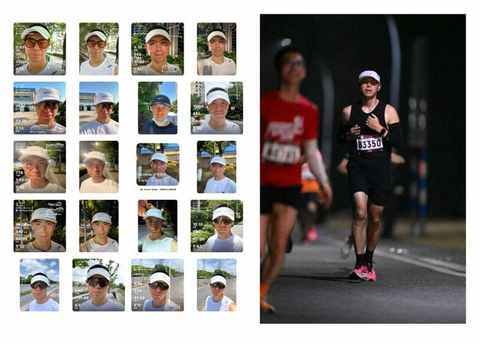

防晒、专注、心流！中年人跑步的仪式感，这顶帽子全给了
约斯特普通
2025-09-25
中年人跑步的原因各有不同，但殊途同归，必然会经历对跑步装备的发烧到退烧，最终必将找到让每次跑步都有仪式感的装备。
一、发烧阶段是必经之路
虽然刚开始跑步的时候会经常带上痛苦面具，但整个过程是愉悦的，是一个逐渐对跑步这项运动和 了解 我们自身身体的契机。
在入门阶段，心态很积极很开放，再结合着新手福利期叠加的 buff，每次跑都能比上次进步一点点，所以对 各种跑步装备的好奇也就在所难免：
- 跑步鞋
- 跑鞋鞋垫
- 跑鞋防磨贴
- 跑步袜
- 跑步帽
- 跑步眼镜
- 跑步T恤
- 跑步背心
- 跑步压缩裤
- 跑步短裤
- 跑步长裤
- 跑步长袖
- 跑步腰包
- 跑步防晒袖
- ……
再结合着各个平台跑步相关的博主和商品都超级丰富，在算法的加持下，你很难不上头，例如：我这两年买的袜子够用接下来 3 年的！

现在的袜子质量都很好，想要穿破一双袜子并不是容易做到的事情。如果一定要推荐的话，建议大家试试长跑时代和李宁的跑步袜。
不仅自己用，也买过作为礼物送人。
二、对装备的退烧是必然
或早或晚，到了一定时间或者跑量之后，一定会退烧。
这时候，正是更好地认清自身需求的好时机，例如：
- 夜跑为主：那便无需跑步眼镜和防晒袖
- 跑步不带手机： 那便无需腰包和运动耳机
- 慢跑为主：那边无需背心压缩裤等
- ……
跑的越来越多之后你会发现，有一个装备在每次跑步时你都会带上，似乎是一把钥匙， 带上就等于解锁了跑步模式。
我的是帽子，每次必须带上，即使是阴天，即便是夜跑。

三、中年人跑步的仪式感
中年人跑步需要仪式感，现在日常跑步会带上的东西有：
- 手机
- 帽子
- 耳机（听播客或歌曲）
- 腰包（如果短裤放不了手机）
- 纸巾（备用，冬天特别需要）
如果只能选两个东西带上，那就是手机和帽子。
帽子能防晒、能让我更专注，同时也是一次跑步的开启，似乎是游戏里的开始按钮，戴上帽子调整好之后一场游戏正式开局。
结束的那一刻并不是在手表上结束运动进程的那一下，而是拉伸后回到家把帽子拿下来的那一秒。
希望大家都能找到让跑步有仪式感的装备。